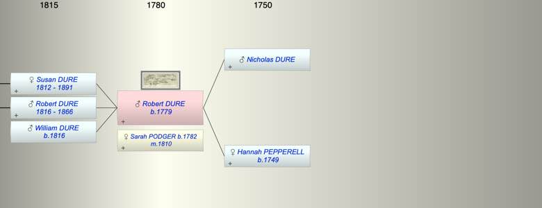
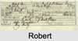

| [Index] |
| Robert Pepperell DURE (1779 - ) |
|  |
|  |
| b. 1779 at Stokenham, Devon |
| m. 09 Mar 1810 Sarah PODGER (1782 - ) at Langport |
| Near Relatives of Robert Pepperell DURE (1779 - ) | ||||||
| Relationship | Person | Born | Birth Place | Died | Death Place | Age |
| Father | Nicholas DURE | |||||
| Mother | Hannah PEPPERELL | 1749 | Slapton | |||
| Self | Robert Pepperell DURE | 1779 | Stokenham, Devon | |||
| Wife | Sarah PODGER | 1782 | Langport, Somerset | |||
| Daughter | Susan DURE | abt 1812 | 1891 | Plympton St Mary | 79 | |
| Son | Robert DURE | 1816 | Langport | 16 Jun 1866 | Coleridge, Devon | 50 |
| Son | William DURE | 1816 | ||||
| Son in Law | Nicholas John HAMMETT | 1812 | Plymouth | 1873 | Plympton St Mary | 61 |
| Daughter in Law | Elizabeth HARLEY | |||||
| Grandson | Robert H HAMMETT | 1838 | Stokenham | |||
| Granddaughter | Sarah Agnes HAMMETT | 1841 | Plymton | 1880 | 39 | |
| Grandson | Stephen HAMMETT | 16 Jun 1845 | Plympton St Mary | 29 Apr 1915 | Plymouth | 69 |
| Granddaughter | Eliz DURE | 1841 | South Pool, Devon | |||
| Granddaughter | Mary Grace Hurley DURE | 1843 | Stokenham | |||
| Grandson | John Harley DURE | 1845 | Stokenham | |||
| Events in Robert Pepperell DURE (1779 - )'s life | |||||
| Date | Age | Event | Place | Notes | Src |
| 1779 | Robert Pepperell DURE was born | Stokenham, Devon | Note 1 | ||
| 09 Mar 1810 | 31 | Married Sarah PODGER (aged 28) | Langport | Note 2 | |
| abt 1812 | 33 | Birth of daughter Susan DURE | various | ||
| 1816 | 37 | Birth of son Robert DURE | Langport | ex 1851 census | |
| 1816 | 37 | Birth of son William DURE | Note 3 | ||
| 16 Jun 1866 | 87 | Death of son Robert DURE (aged 50) | Coleridge, Devon | Note 4 | |
| 1891 | 112 | Death of daughter Susan DURE (aged 79) | Plympton St Mary | Note 5 | |
| Robert Pepperell DURE died (no date) | Note 6 | ||||
| Personal Notes: |
|
ex daughter's marriage
1861 Robert Dure 82 born Stokenham Sarah 72 Wife born Langport Somereset Robert Deere 47 Son Eliza Deere 20 Granddaughter Mary Grace Harley Deere18Granddaughter |
| Created on a Mac™ using iFamily for Mac™ on 15 Sep 2023 |